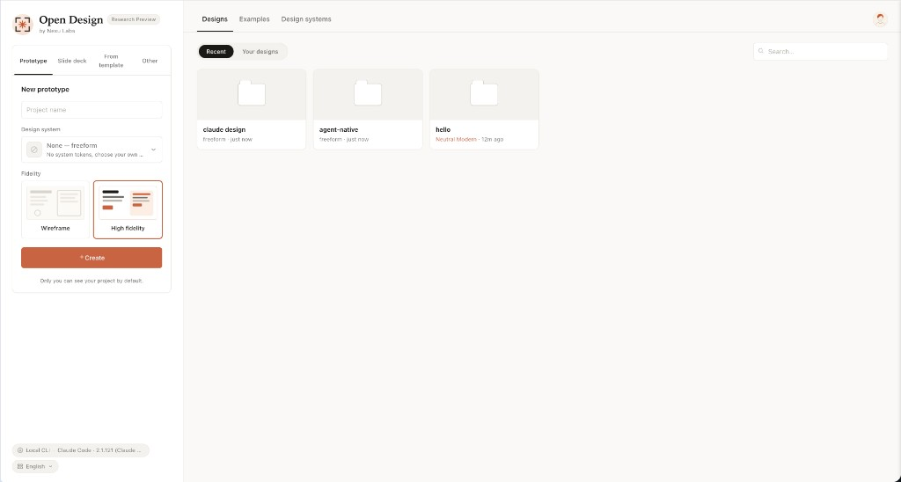
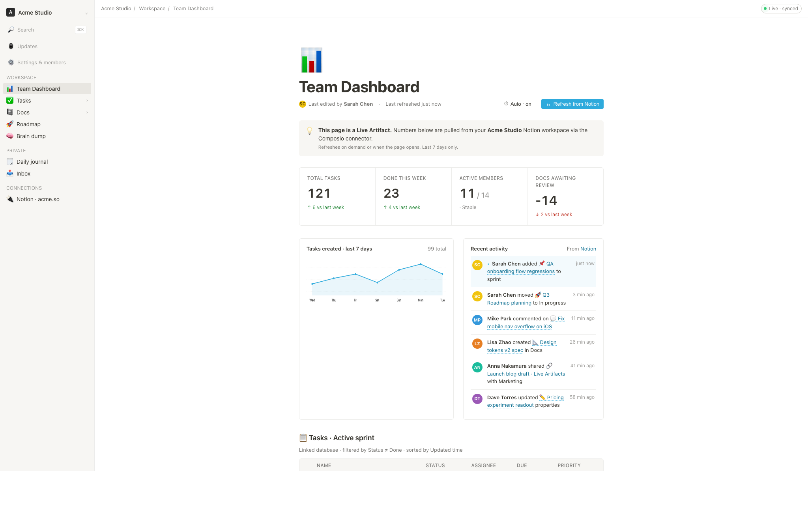

它把 Claude Design 的 artifact-first 设计循环开源化：用户从 Home 选择 skill 与 design system，进入 Studio 生成 prototype、dashboard、deck、image、video/HyperFrames，再通过本地 daemon、MCP server 与 22 个 coding-agent CLI 交互。新版重点新增/强化 0.10.0 一体化桌面工作台、官方 AMR 模型路由、261 插件市场、150 个品牌 DESIGN.md 与跨 Agent 安装路径。
从“替代 Claude Design”升级为一窗口 Agentic 设计工作台
README 开头明确写到 0.10.0：从模糊 idea 到 reference discovery、material gathering、interactive editing、comment queue、motion polish 和 handoff，全流程不离开 App。
AMR 成为官方模型服务，而不是外部配置说明
Open Design AMR 提供 GPT、Claude、Gemini、DeepSeek 等 20+ flagship models，零配置，按真实 token 用量计费；同时仍保留 BYOK / OpenAI-compatible endpoint。
插件与设计系统数量成为核心卖点
新版写法强调 100+ skills、150 brand-grade DESIGN.md systems、261 official plugins，并把它们解释为三个平面：skills 承载品味，design systems 承载品牌，plugins 承载工作流。

从入口页启动任务
选择 skill 与 design system，输入 brief，作为所有生成任务的统一起点。
重复设计流程变成可调度自动化
把常见流程抽成 reusable/schedulable automations，降低每次从零 prompt 的成本。
DESIGN.md 变成品牌契约
9-section schema 覆盖颜色、字体、间距、组件、动效、声音与 anti-patterns。
插件市场 + MCP 接入外部系统
通过 plugin manifest、MCP tools、agent adapters 把设计生产接入 IDE、脚本和自动化。
Prototype
Web、desktop、mobile 单页 artifacts，读取设计系统后在 sandboxed iframe 中预览。
Dashboard / Live Artifact
从 GitHub dashboard、研究决策室到运营看板，强调可运行而非静态图。
Deck
内置 magazine-style web PPT 与 HTML PPT 家族，可键盘导航并导出 PPTX/PDF。
Video / HyperFrames
把 HTML 动效渲染到 MP4，面向 agent-native motion graphics。

Open Design 的关键不是自带一个“万能 Agent”，而是把现有 CLI agent 当设计引擎：Claude Code、Codex、Cursor、Copilot、Gemini、OpenCode、OpenClaw、Antigravity、Cline、Trae、Kimi、Pi、Mistral Vibe、Hermes 等通过 `od mcp install <agent>` 接入。
MCP 安装：`od mcp install claude`
使用本地项目文件与 artifact API。
README 明确列入 agent compatibility。
无 CLI 时可走 `/api/proxy/{provider}/stream`。
100+ SKILL.md folders
遵循 Claude Code SKILL.md convention，并扩展 `od:` frontmatter：mode、platform、scenario、preview.type、design_system.requires、default_for、fidelity 等。
150 brand-grade DESIGN.md
来自 awesome-design-md 等来源，覆盖 Linear、Stripe、Vercel、Airbnb、Apple、Tesla、Notion、Anthropic、Cursor、Supabase、Figma 等品牌。
261 official plugins
插件是 portable agent-skill folder：SKILL.md + optional open-design.json manifest，描述 marketplace metadata、inputs、previews、pipelines 和 capabilities。
| Plugin Category | Count | What it contains |
|---|---|---|
| scenarios | 11 | od-default、design-refine、figma/code migration、react/next/vue export、media generation 等完整场景。 |
| image-templates | 45 | editorial、cinematic、product、portrait 等一次性图像提示词。 |
| video-templates | 50 | HyperFrames / Seedance / Veo motion templates。 |
| design-systems | 142 | 品牌 DESIGN.md 包装为插件，服务于 marketplace 分发。 |
| atoms + examples | 153 | 可复用 UI fragments 与 remixable reference outputs。 |
Next.js 16 + Electron shell
Chat、file workspace、iframe preview、settings、import 与 MCP 面板运行在浏览器/Electron shell 里。
Node 24 + Express + SQLite
本地 daemon 提供 `/api/skills`、`/api/plugins`、`/api/design-systems`、`/api/chat`、`/api/proxy/*`、artifact save/lint 和 MCP stdio server。
spawn local coding-agent CLI
Daemon 在 managed project cwd 中启动 claude / codex / cursor-agent / hermes / kimi 等，agent 读取 SKILL.md + DESIGN.md 后写产物到磁盘。
Sandboxed iframe + streaming artifact parser
导出路径包括 HTML、PDF、PPTX、ZIP、Markdown、MP4；HyperFrames 支撑 HTML→MP4 动效。
curl -fsSL https://open-design.ai/install.sh | sh -s hermes od mcp install hermes od search-files "primary button" od get-file design-systems/linear-app/DESIGN.md od plugin run web-prototype --brief "Generate a landing page"
| Dimension | Claude Design | Figma | Open Design |
|---|---|---|---|
| Open source | Closed | Closed | Apache‑2.0 |
| Self-host / desktop | No | No | macOS + Windows + Vercel / Docker |
| Agent-native | Anthropic only | No | 22 CLIs + BYOK |
| Brand system | Proprietary | Theme JSON | 150 DESIGN.md systems |
| Motion / video | Limited | No first-class agent loop | HyperFrames HTML→MP4 |
Repo：github.com/nexu-io/open-design · 当前卡片按 infocard-redswiss-style 从零重建。